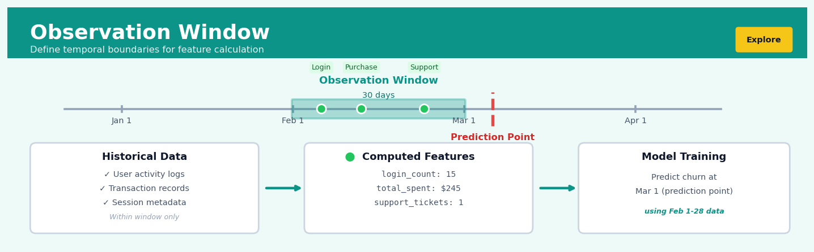

Observation Window#


The most critical mistake I see teams make is using overlapping observation windows between train and test sets, which creates severe temporal leakage. Always ensure your test observation window starts after your training prediction point ends, maintaining strict chronological separation. This boundary discipline is what separates models that work in backtesting from models that actually perform in production.
The 60-Second Version#
What it does: The Observation Window sets the timeframe you look backwards from each prediction point to calculate what a customer has done historically.
When to use it: You’re building a model to predict future behaviour (churn, purchase, default) and need to define how much customer history counts as your “baseline” for making that prediction.
What you get back: A fixed-length history window for every customer at their prediction moment, ensuring you only use information that actually existed when you needed to make the decision.
Difficulty |
Easy |
Typical runtime |
Seconds to minutes on 100K rows |
What you bring |
Time-stamped event data and a prediction date for each entity |
What you get |
Features calculated from a consistent historical period per entity |
Heuristix bucket |
Explore — Shaping & Transforming Data |
The Observation Window prevents your model from cheating by seeing the future—it enforces what you actually knew at decision time.
Learning Objectives#
After reading this chapter, a business user will be able to:
Identify whether a prediction problem requires an observation window by distinguishing between scenarios where historical behavior matters versus point-in-time snapshots.
Explain to stakeholders why predictions made today use data from a specific historical period and how that period was chosen.
Decide whether a proposed prediction timeframe gives enough historical data to build reliable features without introducing data that wouldn’t have been available at decision time.
After reading this chapter, a data scientist will be able to:
Implement observation windows that prevent data leakage by correctly aligning feature calculation periods with prediction points across multiple entities and time periods.
Configure observation window length by balancing the trade-off between feature stability (longer windows) and recency (shorter windows) for a given prediction problem.
Diagnose observation window errors by detecting symptoms like unrealistic model performance, missing features for recent entities, or misaligned temporal boundaries in training data.
Overview#
The Observation Window is a temporal data shaping operation that defines the fixed period during which predictor variables (features) are calculated for each entity in a predictive modelling context. It establishes the boundary between “what we knew at the time of prediction” and “what we are trying to predict,” ensuring that models are trained on information that would have been legitimately available at prediction time. This technique belongs to the family of temporal feature engineering and point-in-time data construction methods, forming a foundational component of any supervised learning pipeline built on time-stamped behavioural data.
When to Use This#
Use this when:
Building propensity models on transactional data — When predicting customer behaviour (churn, conversion, default), you need a systematic way to aggregate historical transactions into features without introducing future information leakage.
Constructing cohort-based training sets — When training data must represent multiple “snapshots” of different entities at different points in time, each requiring its own consistent lookback period for feature calculation.
Ensuring regulatory compliance in credit scoring — Financial regulators often mandate that models use only information available at the time of decision; the observation window formalises this constraint.
Developing early warning systems — When the business requires predictions at a specific lead time (e.g., 30 days before potential default), the observation window defines what data feeds the prediction.
Comparing performance across time periods — When you need to ensure that features are calculated identically across training, validation, and scoring populations, regardless of when those populations are observed.
Engineering features from high-frequency event streams — When raw data consists of timestamped events (purchases, logins, claims), the observation window provides the aggregation boundary for computing counts, sums, recency metrics, and trends.
Do NOT use this when:
Working with cross-sectional data without temporal ordering — If your data represents a single point-in-time survey or snapshot with no temporal dimension, observation windows are unnecessary.
Target variable is contemporaneous with features — If you are building an explanatory model where the outcome and predictors are measured simultaneously (not a forecasting problem), temporal separation is not required.
Real-time streaming predictions with no lookback — If predictions must be made instantaneously on single events without historical aggregation, the observation window concept does not apply.
Questions This Answers#
Preventing Model Failure and Data Leakage#
Can we trust that our churn prediction model would actually work if we deployed it today, or are we accidentally using information we wouldn’t have had at decision time?
Why did our fraud detection model perform so well in testing but completely fail when we put it in production last month?
How do we make sure we’re not training our customer retention model on behaviors that happened after people already churned?
If we built a credit risk model using all of a customer’s first-year data, would that model be useless for making approval decisions on day one?
Making Timely Predictions with Limited Information#
Can we predict which new customers will become high-value accounts using only their first 30 days of activity?
How accurately can we forecast quarterly sales pipeline conversion if we only look at the first two weeks after a lead comes in?
Should we intervene with at-risk customers after 60 days or 90 days — which window gives us enough signal to predict churn while still leaving time to save them?
What’s the minimum observation period we need to identify fraudulent accounts without waiting so long that the damage is already done?
Comparing Decision Timing and Intervention Strategies#
Is it better to make our next-best-offer predictions based on 6 months of purchase history or 12 months — which gives us more accurate targeting?
If we want to predict hospital readmission risk, should we look at the 30 days before admission, 90 days, or the full prior year?
Can we identify failing equipment using just the last week of sensor data, or do we need a full month to get reliable predictions?
Should our collections strategy score customers based on their last 60 days of payment behavior or their entire account history?
Which gives us better early warning of employee turnover — looking at their first 90 days or their first 6 months?
How It Works#
Imagine you’re a loan officer in 2018 deciding whether to approve Maria’s mortgage application. You can look at her credit card spending from the past six months, her income history from the past year, and her address changes over the past two years—but you absolutely cannot peek at whether she missed any payments after you made your decision. That would be cheating. The observation window is exactly this: the rearview mirror you’re allowed to use. If you’re making a decision on June 1st and your observation window is 90 days, you calculate everything from March 1st to May 31st. Next month, when reviewing Carlos’s application on July 1st, your window shifts to April 1st through June 30th. The window size stays constant, but it slides forward with each new decision point.
Timeline for Customer #47291
═══════════════════════════════════════════════════════════
Prediction Point
↓
┌─────────────────┼─────────────────┐
│ Observation │ Outcome │
│ Window │ Window │
│ (90 days) │ (30 days) │
└─────────────────┼─────────────────┘
↑ ↑ ↑
Jan 1st Apr 1st May 1st
CALCULATE FEATURES │ MEASURE RESULT
FROM THIS PERIOD │ FROM THIS PERIOD
│ │ │
✓ 47 transactions │ ? Did they │
✓ $2,340 spent │ churn? │
✓ 3 support calls │ │
✓ Avg session: 8m │ │
│ │ │
└────────────────→TRAIN MODEL←──────┘
USING THESE
Identify your prediction points. Start by marking every moment when you need to make a prediction. This might be the first of every month for all active customers, or the moment each user completes registration, or every policy renewal date. Each point represents one row in your training dataset.
Set your window length. Choose how far back you’ll look to gather information—30 days, 90 days, one year. This length should match what you’d realistically have available when making real predictions. If you’re predicting quarterly churn, a 90-day window makes sense. If you’re predicting next-day purchase, maybe seven days is enough.
Anchor the window to each prediction point. For every prediction point, place your observation window immediately before it. If you’re predicting on March 15th with a 60-day window, you gather data from January 14th through March 14th. The window ends exactly one moment before the prediction point—nothing from the future leaks in.
Calculate all features within each window. Count transactions, sum revenue, find averages, detect patterns—but only using data that falls inside that specific window. Customer A’s window captures different dates than Customer B’s window if their prediction points differ.
Slide the window forward, never backward. As you move through time creating training examples, the window shifts along the timeline. It never looks at data from after the prediction point. This mimics exactly what you’ll face in production: a moving “now” with access only to the past.
Separate from the outcome window. The observation window calculates features. A separate window after the prediction point measures what you’re trying to predict. These two windows never overlap—that would be looking at the future to predict the future.
The key insight: The observation window prevents time travel by enforcing the constraint that every feature must be calculable using only information that existed before the moment of prediction.
The Intuition#
Imagine you are a loan officer in 1995, deciding whether to approve a mortgage application. You have access to the applicant’s bank statements, credit history, and employment records — but only up to the day they walked into your office. You cannot see their future behaviour: whether they will lose their job next month, whether property prices will crash, or whether they will faithfully make every payment. Your decision must be made with the information available at that moment.
The observation window formalises exactly this constraint. It is a “temporal fence” that separates the past (which you can observe and use for features) from the future (which contains the outcome you are trying to predict). When we construct training data for a predictive model, we must be disciplined about placing this fence correctly for every single training example. If we accidentally allow future information to leak across this boundary — even subtly — our model will appear to perform brilliantly in backtesting but fail catastrophically in production.
Consider a concrete example: you want to predict which customers will churn in the next 90 days. For each customer, you select an “observation date” — the point in time at which you are making the prediction. The observation window is the period before this date (say, the preceding 12 months) during which you calculate features: how many purchases they made, their average transaction value, how recently they logged in, whether their engagement is trending up or down. The outcome window is the period after the observation date (the next 90 days) during which you observe whether churn actually occurred. These two windows must never overlap, and the observation date must be chosen carefully so that the model learns patterns that generalise to genuine future predictions.
The power of this framework becomes apparent when you realise that a single customer can contribute multiple training examples at different observation dates. A customer observed on 1 January 2023 is a different training example from the same customer observed on 1 April 2023 — they have different feature values (computed over different observation windows) and potentially different outcomes. This “time-slicing” approach dramatically increases training data volume while ensuring temporal validity.
The Mathematics#
Formal Problem Setup#
Let \(\mathcal{E} = \{e_1, e_2, \ldots, e_N\}\) denote a set of entities (e.g., customers, accounts, devices). For each entity \(e_i\), we observe a sequence of timestamped events:
where \(t_{i,j} \in \mathbb{R}\) represents the timestamp of the \(j\)-th event and \(\mathbf{x}_{i,j} \in \mathbb{R}^d\) represents the associated event attributes (e.g., transaction amount, product category, channel).
We define an observation date \(T_{\text{obs}}\) for each training example. The observation window is characterised by two parameters:
Lookback period \(\Delta_{\text{obs}} > 0\): the duration of history used for feature calculation
Observation window interval: \([T_{\text{obs}} - \Delta_{\text{obs}}, T_{\text{obs}})\)
Feature Extraction Function#
For a given entity \(e_i\) and observation date \(T_{\text{obs}}\), we define the in-window event set as:
A feature extraction function \(\phi: 2^{\mathcal{H}} \to \mathbb{R}^p\) maps this event set to a fixed-dimensional feature vector:
Common feature extraction functions include:
Count aggregation:
Sum aggregation over attribute \(k\):
Recency (time since last event):
Trend (slope of linear fit to attribute \(k\)):
Outcome Window and Label Definition#
The outcome window is defined by:
Gap period \(\Delta_{\text{gap}} \geq 0\): buffer between observation and outcome (optional)
Outcome period \(\Delta_{\text{out}} > 0\): duration over which the outcome is observed
Outcome window interval: \((T_{\text{obs}} + \Delta_{\text{gap}}, T_{\text{obs}} + \Delta_{\text{gap}} + \Delta_{\text{out}}]\)
The label \(y_i(T_{\text{obs}})\) is derived from events in the outcome window:
where \(\psi\) is typically an indicator function (e.g., \(\psi = \mathbf{1}[\text{churn event exists}]\)).
Temporal Validity Constraint#
The fundamental constraint ensuring no information leakage is:
This strict inequality ensures that all feature information temporally precedes all outcome information.
Training Set Construction#
Given a set of observation dates \(\{T_{\text{obs}}^{(1)}, T_{\text{obs}}^{(2)}, \ldots, T_{\text{obs}}^{(M)}\}\) and entities \(\mathcal{E}\), the training set is:
where \(\text{valid}(i, j)\) indicates that entity \(e_i\) has sufficient history at observation date \(T_{\text{obs}}^{(j)}\) and the outcome is observable.
Edge Cases and Degenerate Conditions#
Insufficient history: When \(|\mathcal{H}_i^{\text{obs}}| = 0\) (no events in observation window), features are undefined or imputed. Common approaches include:
Exclude the observation from training
Impute with population means
Use indicator variables for missingness
Right-censoring: If current date \(T_{\text{now}} < T_{\text{obs}} + \Delta_{\text{gap}} + \Delta_{\text{out}}\), the outcome is not yet fully observable. Such observations must be excluded from training.
Multiple observation dates per entity: When the same entity appears at multiple observation dates, training examples are not independent. This violates i.i.d. assumptions and may require:
Clustered standard errors
Entity-level cross-validation splits
Weighting schemes to prevent over-representation
Understanding the Mathematics#
The Observation Window Boundary#
The equation:
Read it aloud:
“The observation window equals all time points from the prediction time minus the window width, up to but not including the prediction time itself.”
What each symbol means:
\(T_{\text{obs}}\) = the observation window (a time interval)
\(t_0\) = the prediction time (the moment we make our prediction)
\(w\) = the window width (how far back we look)
\([~,~)\) = interval notation: square bracket means “include this endpoint,” parenthesis means “exclude this endpoint”
A concrete numerical example:
You’re predicting customer churn on January 31, 2024, using a 90-day observation window. Here, \(t_0\) = January 31, 2024 and \(w\) = 90 days. Therefore \(T_{\text{obs}}\) = [November 2, 2023, January 31, 2024). You include all customer behavior from November 2 at midnight through January 30 at 11:59 PM. January 31 itself is excluded because that’s your prediction day—you can’t use same-day data to predict same-day outcomes.
Why this equation matters:
This boundary prevents data leakage by ensuring we only use information that existed before the moment we’re making the prediction, exactly as we would in production.
Feature Aggregation Over the Window#
The equation:
Read it aloud:
“The feature value for entity i, calculated at prediction time using a window of width w, equals some aggregation function applied to all raw observations for entity i during the observation window.”
What each symbol means:
\(X_i\) = the calculated feature for entity i (a single number)
\(x_i(t)\) = raw observations for entity i at time t (individual events)
\(f\) = an aggregation function (sum, count, average, max, etc.)
\(\{~:~\}\) = set notation meaning “collect all values where this condition is true”
A concrete numerical example:
Customer #1247 made purchases at these amounts during the 30-day window: \(45, \)120, \(30, \)85. If \(f\) = sum, then \(X_{1247}\) = 45 + 120 + 30 + 85 = \(280 total spend. If \)f\( = count, then \)X_{1247}\( = 4 transactions. If \)f\( = average, then \)X_{1247}\( = 280 ÷ 4 = \)70 per transaction.
Why this equation matters:
This transforms messy, irregular event streams into clean, fixed-length feature vectors that machine learning algorithms can actually consume.
Point-in-Time Correctness Constraint#
The equation:
Read it aloud:
“For all time points in the observation window, the timestamp of every observation for entity i must be strictly earlier than the prediction time.”
What each symbol means:
\(\forall\) = “for all” (checking every single point)
\(\text{timestamp}(x_i(t))\) = when the data was actually recorded in the system
\(<\) = strictly less than (must come before, never equal)
\(t_0\) = prediction time
A concrete numerical example:
You’re predicting loan default at 9:00 AM on March 15. A payment record shows transaction date = March 14, but system timestamp = March 15 at 2:00 PM. Even though the transaction date falls in your window, timestamp(2:00 PM) is not < 9:00 AM, so this record must be excluded. It wasn’t in your database yet when you made the prediction.
Why this equation matters:
This prevents the insidious “training on the future” bug where models learn from data that wouldn’t exist yet in production, causing catastrophic performance drops at deployment.
The Big Picture#
The mathematics of observation windows solves a deceptively simple problem: converting “what happened” into “what we knew when.” Raw timestamped data arrives irregularly and gets recorded with delays, but machine learning models need clean, point-in-time snapshots. These equations formalize the temporal boundaries that separate legitimate historical context from forbidden future information. We use strict inequality and interval notation rather than vague “recent data” instructions because precision matters—even a one-second violation can leak outcome information backward and invalidate your entire model. Think of it as building a time machine with an ironclad rule: you can look backward through the window, but the glass must be completely opaque to anything that happens after you press the predict button.
Python Implementation#
import pandas as pd
import numpy as np
from datetime import timedelta
# =============================================================================
# Example 1: Basic Observation Window Construction
# =============================================================================
# Create synthetic transaction data
np.random.seed(42)
n_customers = 1000
n_transactions = 50000
transactions = pd.DataFrame({
'customer_id': np.random.randint(1, n_customers + 1, n_transactions),
'transaction_date': pd.date_range('2022-01-01', periods=730, freq='D')[
np.random.randint(0, 730, n_transactions)
],
'amount': np.random.exponential(50, n_transactions),
'channel': np.random.choice(['online', 'store', 'mobile'], n_transactions)
})
transactions = transactions.sort_values(['customer_id', 'transaction_date'])
print("Transaction data shape:", transactions.shape)
print(transactions.head(10))
# Define observation window parameters
observation_date = pd.Timestamp('2023-06-01')
lookback_days = 365 # 12-month observation window
# Calculate observation window boundaries
obs_window_start = observation_date - timedelta(days=lookback_days)
obs_window_end = observation_date
print(f"\nObservation Window: {obs_window_start} to {obs_window_end}")
# Filter transactions to observation window
obs_transactions = transactions[
(transactions['transaction_date'] >= obs_window_start) &
(transactions['transaction_date'] < obs_window_end)
].copy()
print(f"Transactions in observation window: {len(obs_transactions)}")
# =============================================================================
# Example 2: Feature Engineering within Observation Window
# =============================================================================
def compute_observation_features(transactions_df, obs_date, lookback_days):
"""
Compute features for each customer based on their transaction history
within the observation window.
Parameters:
-----------
transactions_df : pd.DataFrame
Transaction-level data with customer_id, transaction_date, amount
obs_date : pd.Timestamp
The observation date (prediction point)
lookback_days : int
Number of days to look back for feature calculation
Returns:
--------
pd.DataFrame : Customer-level features
"""
window_start = obs_date - timedelta(days=lookback_days)
# Filter to observation window
window_txns = transactions_df[
(transactions_df['transaction_date'] >= window_start) &
(transactions_df['transaction_date'] < obs_date)
].copy()
# Calculate days since observation date for recency
window_txns['days_ago'] = (obs_date - window_txns['transaction_date']).dt.days
# Aggregate features by customer
features = window_txns.groupby('customer_id').agg(
# Count features
txn_count=('amount', 'count'),
# Monetary features
total_spend=('amount', 'sum'),
avg_spend=('amount', 'mean'),
max_spend=('amount', 'max'),
std_spend=('amount', 'std'),
# Recency features
days_since_last_txn=('days_ago', 'min'),
days_since_first_txn=('days_ago', 'max'),
# Frequency features
unique_days=('transaction_date', 'nunique')
).reset_index()
# Calculate derived features
features['avg_days_between_txn'] = (
features['days_since_first_txn'] - features['days_since_last_txn']
) / (features['txn_count'] - 1).clip(lower=1)
# Fill NaN for customers with single transaction
features['std_spend'] = features['std_spend'].fillna(0)
# Add observation date for reference
features['observation_date'] = obs_date
return features
# Compute features for a single observation date
features_single = compute_observation_features(
transactions,
observation_date,
lookback_days=365
)
print("\nFeatures for single observation date:")
print(features_single.head(10))
print(f"\nFeature statistics:\n{features_single.describe()}")
# =============================================================================
# Example 3: Multiple Observation Windows (Time-Slicing)
# =============================================================================
def create_training_set_with_windows(
transactions_df,
observation_dates,
lookback_days,
outcome_days,
gap_days=0
):
"""
Create a complete training set with features and labels for multiple
observation dates (time-slicing approach).
Parameters:
-----------
transactions_df : pd.DataFrame
Transaction-level data
observation_dates : list of pd.Timestamp
Dates at which to create observation windows
lookback_days : int
Feature calculation lookback period
outcome_days : int
Outcome window duration
gap_days : int
Gap between observation and outcome window
Returns:
--------
pd.DataFrame : Training set with features and labels
"""
all_features = []
for obs_date in observation_dates:
# Calculate feature window
features = compute_observation_features(
transactions_df, obs_date, lookback_days
)
# Calculate outcome window boundaries
outcome_start = obs_date + timedelta(days=gap_days)
outcome_end = outcome_start
## Visualisations


## Using This in Heuristix
### What You'll Need
The Observation Window node expects **event-level data** with timestamps. Think customer transactions, website visits, or support tickets—any dataset where each row represents something that happened at a specific moment.
**Required columns:**
- An **entity ID** (customer_id, user_id, account_number, etc.)
- A **timestamp** (when the event occurred)
- Your **feature columns** (transaction amounts, page views, product categories—whatever you want to aggregate)
**Example input data:**
| customer_id | event_date | purchase_amount | product_category |
|-------------|------------|-----------------|------------------|
| C001 | 2024-01-15 | 45.00 | Electronics |
| C001 | 2024-02-03 | 22.50 | Books |
| C002 | 2024-01-20 | 100.00 | Electronics |
### Configuration Parameters
| Parameter | What It Does | Sensible Default | When to Adjust |
|-----------|--------------|------------------|----------------|
| **Prediction Date** | The "as of" moment when you're making predictions | Today's date | Set to your historical prediction point for backtesting, or your actual prediction date for production |
| **Window Length** | How far back to look (e.g., 30 days, 90 days, 1 year) | 90 days | Longer windows capture trends but may include stale data; shorter windows are more reactive but potentially noisy |
| **Entity ID Column** | Which field identifies your subjects | Auto-detected | Change if you have multiple ID columns |
| **Timestamp Column** | Which date/datetime field to use | Auto-detected | Specify if you have multiple date fields |
| **Aggregation Type** | How to summarize (sum, count, average, min, max, last) | count | Match to your feature—use sum for amounts, count for frequency, last for most recent status |
### What You'll Get Out
The node transforms your event-level data into **one row per entity** with aggregated features calculated over your specified window.
**Output columns include:**
- Your original entity ID
- `observation_window_start` and `observation_window_end` (the actual date range used)
- Aggregated feature columns (named with your chosen aggregation, like `purchase_amount_sum` or `event_count`)
- `events_in_window` (a helpful diagnostic showing how many records were included)
You'll also see a **summary card** displaying:
- Total entities processed
- Date range of the observation window
- Coverage statistics (what % of entities had at least one event)
### Quick Start: Building Purchase History Features
1. **Connect your transaction data** to the Observation Window node
2. **Set Prediction Date** to the date you want to make predictions (e.g., 2024-03-01)
3. **Set Window Length** to 90 days (capturing three months of behavior)
4. **Select your Entity ID** (customer_id)
5. **Choose Timestamp Column** (transaction_date)
6. **Configure aggregations** for each feature (sum for amounts, count for frequency)
7. **Run the node** and verify the output shows one row per customer
### Connecting Downstream
This node typically flows into:
- **Feature Engineering** nodes to create ratios or derive additional features
- **Join** nodes to merge with outcome labels or entity attributes
- **Train Model** nodes directly if your features are ready for modeling
### Tips from the Field
**Watch for sparse entities.** Some customers may have no events in your window. The node handles this gracefully by creating rows with zero/null values, but you may want to filter these out or treat them specially.
**Mind the window edge.** If your prediction date is too close to your earliest data, you'll get incomplete windows. Check the `observation_window_start` output to verify you're getting the full period.
**Use multiple windows.** Consider creating 30-day, 90-day, and 365-day windows separately and joining them. This helps your model detect both recent changes and long-term patterns.
**Test your date logic.** Run the node with a known historical prediction date and manually verify a few customers' aggregations match what you'd calculate by hand. This catches timezone issues and off-by-one errors early.
**Label your features clearly.** With multiple windows and aggregations, you'll quickly accumulate columns like `amount_sum_90d` and `amount_sum_30d`. Establish a naming convention early.
## Config Recipes
### Recipe 1: Rapid Prototyping Sprint
- **When to use:** Initial exploration when you need to validate whether temporal features have any predictive signal before investing in infrastructure.
- **Settings:**
| Parameter | Value | Why |
|-----------|-------|-----|
| `observation_days` | 30 | Captures one business cycle without computational overhead |
| `aggregation_level` | Daily | Avoids hourly granularity processing costs |
| `feature_functions` | `['count', 'sum']` | Minimal complexity; fastest to compute |
| `min_history_required` | 7 | Tolerates sparse data; maximizes sample size |
| `gap_days` | 0 | Skips leakage protection to test upper-bound performance |
- **What you get:** Quick feature matrix in minutes that reveals whether temporal patterns exist worth pursuing.
- **Trade-off:** Zero leakage protection means overly optimistic performance metrics that cannot be deployed.
### Recipe 2: Production-Grade Deployment
- **When to use:** Building models for live scoring where prediction integrity and regulatory compliance matter.
- **Settings:**
| Parameter | Value | Why |
|-----------|-------|-----|
| `observation_days` | 90 | Balances recency with seasonal stability |
| `aggregation_level` | Hourly | Preserves intraday behavioral patterns |
| `feature_functions` | `['count', 'sum', 'mean', 'std', 'trend']` | Comprehensive feature set for robustness |
| `min_history_required` | 30 | Ensures statistical reliability of computed features |
| `gap_days` | 2 | Accounts for batch processing delays in real systems |
| `timezone_handling` | `'entity_local'` | Prevents time zone artifacts in user behavior |
| `missing_strategy` | `'forward_fill_with_flag'` | Explicit missing indicators for model awareness |
- **What you get:** Feature set that replicates exact production conditions with no temporal leakage.
- **Trade-off:** Reduced training sample size due to strict history requirements and prediction gap.
### Recipe 3: Subscription Renewal with Grace Period
- **When to use:** Predicting customer churn where contracts have 14-day cancellation windows that contaminate recent behavior.
- **Settings:**
| Parameter | Value | Why |
|-----------|-------|-----|
| `observation_days` | 60 | Two billing cycles of clean behavioral data |
| `aggregation_level` | Weekly | Smooths day-of-week noise in subscription actions |
| `feature_functions` | `['count', 'sum', 'recency', 'frequency']` | RFM-style features for engagement measurement |
| `min_history_required` | 21 | At least three weeks to establish baseline |
| `gap_days` | 14 | Excludes grace period where cancellation decisions already made |
| `exclude_outcome_period` | True | Prevents using behavior during outcome window |
- **What you get:** Features capturing stable behavioral patterns before users entered decision mode.
- **Trade-off:** Prediction happens earlier than business naturally requests, requiring workflow adjustment.
### Recipe 4: Fraud Detection with Adversarial Adaptation
- **When to use:** Detecting fraud where attackers rapidly change tactics, making older patterns misleading rather than informative.
- **Settings:**
| Parameter | Value | Why |
|-----------|-------|-----|
| `observation_days` | 7 | Short window captures current attack vectors only |
| `aggregation_level` | Hourly | Attack patterns evolve within days |
| `feature_functions` | `['count', 'velocity', 'deviation']` | Emphasizes rate-of-change over absolutes |
| `min_history_required` | 1 | Accept minimal history; recency trumps volume |
| `gap_days` | 0 | Fraud investigation is retrospective |
| `rolling_baseline` | 3 days | Compares current behavior to immediate past, not distant history |
- **What you get:** Hyper-recent features that detect emerging patterns before they become widespread.
- **Trade-off:** Model requires frequent retraining as feature distributions shift with attacker behavior.
## Business Applications
**Financial Services**
A mid-sized UK mortgage lender was experiencing a 22% default rate on loans approved using traditional credit scoring models that mixed historical data from varying time periods. By implementing a strict 12-month observation window ending exactly 30 days before each loan application date, the data science team ensured all behavioural features—payment history, credit utilisation, account age—reflected only information a loan officer would have genuinely known at decision time. This temporal discipline eliminated data leakage from post-application events and reduced default rates to 14%, saving approximately £3.8M annually in write-offs while maintaining approval volumes.
**Retail & E-commerce**
An e-commerce retailer with 4.5M active customers needed to predict which shoppers would respond to a premium membership offer. Their initial model used a 90-day observation window that inadvertently included purchase behaviour occurring *after* customers had already seen previous membership promotions, inflating model performance during training. By aligning the observation window to end precisely when each promotion was sent historically, and using only the 60 days prior for feature calculation, they built a model that accurately predicted conversion in live campaigns, lifting response rates from 2.1% to 4.7% and generating an incremental £890K in membership revenue per quarter.
**Healthcare & Life Sciences**
A hospital network serving 340,000 patients annually struggled to predict which post-surgical patients would be readmitted within 30 days. Clinicians needed predictions at the moment of discharge, but the analytics team's initial model used features calculated across inconsistent time periods, some extending past the discharge date itself. Implementing a standardised 72-hour observation window—capturing vital signs, medication compliance, and mobility scores from admission through discharge—created point-in-time predictions that reduced preventable readmissions by 19% and saved the network approximately $2.3M in Medicare penalties while improving patient outcomes.
**Insurance**
A commercial vehicle insurance provider writing 45,000 policies annually needed to identify high-risk fleets at renewal time. Their legacy approach used "all available data" for each customer, meaning some risk scores incorporated claims filed after policy inception—information unavailable at underwriting. By establishing a 24-month observation window ending at each policy's previous renewal date, underwriters gained access to truly predictive telematics data, driving behaviour scores, and claims history. This temporal precision reduced loss ratios from 78% to 63% on renewed policies, translating to £4.1M in improved combined ratio performance.
**Manufacturing**
A pharmaceutical contract manufacturer operating six facilities needed to predict equipment failures that cost $180K per incident in downtime and scrapped batches. Maintenance teams required 14-day advance warning to schedule interventions. The predictive maintenance model used a rolling 90-day observation window of sensor data—temperature fluctuations, vibration patterns, pressure variances—calculated at precisely 14 days before each historical failure event. This approach identified 73% of failures with sufficient lead time, reducing unplanned downtime from 340 hours to 97 hours annually and saving approximately $1.6M.
**Logistics & Supply Chain**
A regional logistics provider managing 1,200 delivery vehicles needed to forecast driver turnover 60 days in advance to maintain service levels. By using a 6-month observation window of driving patterns, route completion rates, customer feedback scores, and schedule adherence—calculated exactly 60 days before each historical resignation—they built a model that predicted 68% of voluntary departures with actionable lead time, reducing recruiting costs by £340K annually and cutting service disruptions by 41%.
**Marketing & Advertising**
A programmatic advertising platform serving 200+ brands needed to predict which users would click on ads within the next browsing session. Their observation window captured the previous 20 page views and 15 minutes of activity immediately before ad serving. This precise temporal boundary—neither too short to miss engagement patterns nor too long to include stale behaviour—improved click-through rate predictions that lifted campaign ROI from 1.9x to 3.4x, retaining clients who had been considering competitor platforms.
**Telecommunications**
A mobile network operator with 8.2M subscribers used a 90-day observation window ending exactly when each customer became eligible for contract renewal to predict churn risk. Features included call drops, data speed complaints, customer service interactions, and competitive offer exposures—all calculated using only pre-eligibility data. This eliminated temporal leakage from post-eligibility behaviour and improved churn model precision by 28%, enabling targeted retention offers that reduced monthly churn from 2.3% to 1.6%.
**Energy & Utilities**
A multi-state utility company needed to predict which of its 430,000 residential customers would default on payments within 90 days. Using a 12-month observation window of payment timeliness, consumption patterns, seasonal variability, and economic indicators—calculated at each billing cycle—they identified at-risk accounts with 71% accuracy, allowing early intervention programs that recovered $890K in otherwise uncollectible revenue quarterly.
**Public Sector**
A metropolitan social services department managing 12,000 at-risk youth cases implemented a 6-month observation window to predict which children were at highest risk of foster placement disruption. By using only case notes, school attendance, family contact frequency, and incident reports from the six months prior to each historical placement, caseworkers received actionable risk scores that reduced placement failures by 23%, improving outcomes for 340 children annually while reducing emergency re-placement costs by $1.1M.
**SaaS & Technology**
A B2B SaaS company with 3,400 enterprise accounts used a 30-day observation window before each contract renewal date to predict expansion revenue opportunities. The window captured product usage depth, feature adoption velocity, support ticket sentiment, and user growth—all calculated at the point when account managers would historically begin renewal conversations. This temporal precision identified upsell-ready accounts with 64% accuracy, cutting processing time for account scoring from 4 days of manual analysis to 20 minutes of automated insight and increasing expansion revenue by $2.7M annually.
## Worked Example
Sarah Chen, a senior data scientist at Meridian Insurance, was called into a Monday morning strategy meeting with the VP of Customer Success. The question on the table was simple but loaded: *Can we predict which customers will file a claim in their first 90 days after purchasing a policy?* The business motivation was clear—early claims were expensive, often indicating mispriced risk or adverse selection. If the model worked, underwriting could adjust pricing tiers, and the onboarding team could proactively reach out to high-risk customers with safety resources. The stakes were meaningful: early claims accounted for 18% of total loss ratio despite representing only 8% of policies.
Sarah pulled transaction data from the claims warehouse and customer engagement logs spanning two years. The dataset included policy purchase dates, website visits, document uploads, customer service calls, and eventual claim events. Here's what a slice looked like:
| customer_id | event_date | event_type | policy_start | claim_date |
|-------------|-------------|------------------|--------------|-------------|
| C10234 | 2023-01-15 | policy_purchased | 2023-01-15 | 2023-02-20 |
| C10234 | 2023-01-16 | document_upload | 2023-01-15 | 2023-02-20 |
| C10234 | 2023-01-22 | support_call | 2023-01-15 | 2023-02-20 |
| C10412 | 2023-01-18 | policy_purchased | 2023-01-18 | NULL |
| C10412 | 2023-01-19 | website_visit | 2023-01-18 | NULL |
The data was messy in familiar ways—duplicate events from logging errors, timestamp inconsistencies between systems, and a three-day reporting lag on some engagement events. Sarah spent an afternoon cleaning timestamps and deduplicating before moving forward.
The critical decision was defining the observation window. Sarah needed to decide: *How much history should I use to build features for each customer?* She chose **30 days from policy start** as her observation window. Her reasoning was practical—she wanted features available early enough to intervene, but long enough to capture meaningful behavioral signals. A 7-day window felt too short; customers barely interacted with the system. A 60-day window would delay predictions too long to be actionable. Thirty days struck the right balance: enough runway to see patterns like multiple support calls, delayed document submissions, or unusual engagement spikes.
In her feature engineering pipeline, Sarah configured the observation window to anchor on `policy_start` and roll forward exactly 30 days. Any event occurring between day 0 and day 30 would count toward features. Anything after day 30 was off-limits—that would be leakage, using future information the model wouldn't have at prediction time.
Here's the core of her feature extraction script:
```python
import pandas as pd
from datetime import timedelta
# Load data
df = pd.read_csv('customer_events.csv', parse_dates=['event_date', 'policy_start'])
# Define observation window: 30 days from policy start
observation_days = 30
# Filter events within observation window
df['days_since_start'] = (df['event_date'] - df['policy_start']).dt.days
df_obs = df[(df['days_since_start'] >= 0) &
(df['days_since_start'] <= observation_days)]
# Aggregate features per customer
features = df_obs.groupby('customer_id').agg(
total_events=('event_type', 'count'),
support_calls=('event_type', lambda x: (x == 'support_call').sum()),
doc_uploads=('event_type', lambda x: (x == 'document_upload').sum()),
first_event_day=('days_since_start', 'min'),
last_event_day=('days_since_start', 'max')
).reset_index()
# Define outcome: claim within 90 days
df_claims = df[['customer_id', 'claim_date', 'policy_start']].drop_duplicates()
df_claims['claim_in_90d'] = (
(df_claims['claim_date'] - df_claims['policy_start']).dt.days <= 90
).fillna(False)
# Join features with labels
final = features.merge(df_claims[['customer_id', 'claim_in_90d']],
on='customer_id', how='left')
The resulting feature table showed clear separation. Customers who filed early claims averaged 4.2 support calls in their first 30 days versus 0.8 for non-claimants. Document upload rates were also telling—claimants uploaded 40% fewer documents in the observation window, suggesting confusion or disengagement.
The insight hit during model evaluation: early claim risk wasn’t about fraud or bad intent—it was about onboarding friction. Customers struggling to navigate the system, calling support repeatedly, and failing to complete setup steps were signaling confusion, not opportunism. This reframed the entire intervention strategy.
Sarah presented findings to the product and operations teams the following week. Instead of tightening underwriting, Meridian launched a “first 30 days” concierge program for customers flagging high on the friction score. Early pilots reduced 90-day claims by 12% in the treated cohort. The model went into production within two months.
Reflecting later, Sarah noted one thing she’d change: the observation window was rigid across all policy types. Auto and home policies had different onboarding complexity; a segmented approach—maybe 21 days for auto, 45 for home—might have captured risk signals more precisely. She also wished she’d tested whether a rolling 30-day window updated weekly would improve early detection further. But for a first pass, the fixed 30-day window delivered exactly what the business needed: actionable predictions grounded in realistic, point-in-time data.
Interpreting Your Results#
You’ve just defined your observation window and shaped your temporal dataset. Now you’re looking at tables showing entity counts, feature availability, and perhaps some diagnostic metrics. Here’s exactly what you’re seeing and what it means for your project.
Entity Count and Coverage Metrics#
Plain-English meaning: These numbers tell you how many entities (customers, patients, accounts) made it through your observation window filter, and what proportion of your original dataset survived the transformation.
Your output will typically show:
Original entity count: Your starting population
Entities with sufficient observation window: Those with enough historical data
Coverage rate: The percentage retained
Concrete benchmarks:
Above 85% coverage: Excellent. Your observation window aligns well with your data maturity.
60–85% coverage: Acceptable for most projects. Some entities lack sufficient history, but you have a viable training population.
Below 60% coverage: Warning zone. You’re losing too many entities—consider shortening your observation window or acknowledging you’re building a model only for “mature” entities.
Red flags:
Coverage drops sharply at specific dates: Indicates a data collection change or system migration. Your features before/after that date may not be comparable.
Coverage varies dramatically by segment: If 90% of premium customers survive but only 40% of basic customers do, your model will be biased toward the premium segment.
Feature Completeness Table#
Plain-English meaning: This shows, for each feature you’re calculating, what percentage of entities have non-null values during their observation window. A feature calculated from transaction data only exists for entities who transacted during that window.
Concrete benchmarks:
95–100% completeness: Core feature suitable for any model. Missing values are rare enough to handle with simple imputation.
70–95% completeness: Usable but requires thoughtful missing value strategy. Consider whether missingness itself is informative.
Below 70% completeness: Sparse feature. Valuable only if the signal is very strong or if you’re specifically modelling sparse behaviours (e.g., “contacted support” might be rare but powerful).
Red flags:
Completeness below 50%: You’re essentially building two models—one for entities with this data, one without. Split your analysis or drop the feature.
Completeness declining over time: Earlier cohorts have richer data than recent ones. This temporal inconsistency will hurt model stability.
Temporal Distribution Chart#
Plain-English meaning: A histogram or time-series plot showing when your observation windows fall on the calendar. This reveals whether you’re training on consistent conditions or mixing different business environments.
Reading this chart:
Even distribution across years: Good. Your model sees seasonal patterns and business cycles.
Clustered in specific months: You’re capturing seasonal behaviour only. Predictions made in off-seasons may be unreliable.
Heavy concentration in distant past: You’re training on old behaviour. If your business has changed, model relevance suffers.
Red flags:
Gaps of 3+ months: Missing data periods. Features calculated before and after the gap may reflect different business states.
90%+ of windows in a single quarter: Extreme seasonality risk. Your model learns “Q4 behaviour,” not general behaviour.
Sanity Check Checklist#
Run these five checks before trusting your observation window configuration:
Date alignment check: Pick three random entities. Manually verify their observation window ends before their outcome event. If you find any overlap, you have data leakage.
Minimum data check: Calculate the minimum number of days/transactions in any observation window. If it’s below your feature calculation threshold (e.g., you need 30 days of data but some windows are only 20 days), you’ll get unreliable features.
Clock-time consistency: Verify all timestamps use the same timezone and format. Mixed UTC/local times will create artificial patterns at timezone boundaries.
Lookback sufficiency: For your most important behavioural features, confirm that 80%+ of entities have enough history. A “90-day spending average” is meaningless if only calculated over 15 days.
Segment balance: Break entity counts by key segments (geography, product tier, customer age). If any major segment drops below 30% coverage, flag it explicitly.
Good Enough to Act On?#
You’re ready to proceed to feature engineering when:
Coverage is above 70% for your target population
Top 10 planned features show >80% completeness
Observation windows span at least 2 business cycles (e.g., 2 years for seasonal businesses)
No single time period contains >40% of your windows
If you meet these thresholds, stop analysing and start building features. Further refinement should happen after you see initial model performance, not before.
Decision Guidance#
What This Result Is Telling You#
When you define an observation window for your predictive model, you are fundamentally deciding how much historical context your business needs to make an accurate forecast. This isn’t just a technical parameter—it’s a strategic choice about your organization’s memory. A 90-day observation window means you’re betting that what a customer did in the past three months tells you enough about what they’ll do next. A 365-day window means you believe patterns play out over a full year cycle. The “result” here is discovering which window length gives you predictions that are both accurate and operationally feasible.
Your analysis will reveal trade-offs between prediction power and data availability. A longer observation window might capture important seasonal patterns or reveal slow-burning customer behaviours, but it also means you can’t make predictions about anyone until they’ve been in your system that long. A shorter window lets you act faster on newer customers or recent behavioural shifts, but might miss crucial long-term patterns. The optimal window length tells you the minimum amount of history your business truly needs to see the future—no more, no less.
This result directly impacts who you can predict for, when you can intervene, and what kind of patterns your organization will consistently catch versus systematically miss. If your winning observation window is 180 days, you’ve just learned that any initiative targeting customers with less history is essentially flying blind. Conversely, you’ve learned you don’t need to wait a full year before confidently predicting behaviour, which accelerates your ability to act.
Decision Points#
If you see this… |
It means… |
Recommended action |
Who acts on this |
|---|---|---|---|
Model performance plateaus beyond 60 days, but 40% of customers have <60 days of history |
Short-term patterns dominate; data coverage is poor for longer windows |
Adopt 60-day window and build a separate “new customer” model for those with 14-30 days |
Product/Analytics Lead |
Performance improves significantly from 90 to 180 days (+8% AUC), with 85%+ customer coverage at 180 days |
Medium-term behavioural patterns are predictive; adequate data exists |
Implement 180-day window; accept you cannot score customers in first 6 months |
Campaign Manager |
365-day window adds only +2% AUC over 180-day but reduces scoreable population by 30% |
Marginal predictive gains don’t justify coverage loss |
Stay with 180-day window; reserve 365-day features for secondary enrichment only |
Head of Analytics |
Performance drops when window exceeds 90 days in a subscription business |
Recent behaviour is more predictive; older data introduces noise |
Use 60-90 day window; consider weighted features favouring recent activity |
Retention Lead |
When to Proceed vs. Investigate Further#
Proceed with confidence when:
Model performance difference between candidate windows is >5% (AUC/F1)
Selected window covers 80%+ of your target population
Business processes can realistically wait for the observation period to complete
Validation across multiple time periods shows stable performance
Proceed with caution when:
Performance gains are modest (2-4%) but coverage drops significantly (>20%)
Your selected window excludes strategically important segments (new customers, reactivations)
Operational systems require predictions faster than the observation window allows
Investigate before acting when:
Performance varies >10% across different validation time periods
Strong business intuition contradicts what the data suggests (e.g., seasonal business but 30-day window performs best)
The optimal window differs substantially across customer segments or product lines
Do not use these results yet when:
You have fewer than 3 complete outcome cycles in your historical data
Data quality issues exist within your proposed observation window
The observation window overlaps with your outcome window (creates data leakage)
The Cost of Getting This Wrong#
Choose too short an observation window and you’ll build a model that chases noise—responding to random weekly fluctuations as if they were meaningful signals, triggering expensive interventions on customers who were never at risk, burning through marketing budget on false alarms. Your retention team wastes time calling customers who weren’t actually leaving. Your offers go to people who would have converted anyway. Choose too long a window and you’ve created an intelligence system that’s always six months behind reality—identifying churners after they’ve already left, flagging fraud after money is gone, recommending products customers have already outgrown. Meanwhile, your newest and often most valuable customer segments remain invisible to your decision systems because they haven’t been around long enough to score. Worse still, if your observation window accidentally overlaps with your prediction period, you’ve built a model that’s secretly cheating—using future information to predict the past—which will perform brilliantly in testing and catastrophically fail in production, potentially costing millions in misallocated resources before anyone notices the model has stopped working.
Common Pitfalls#
The Expanding Window Trap
Here’s what happened: A credit risk analyst was building a default prediction model for a fintech lender. They set a 90-day observation window but implemented it by pulling “all transactions in the 90 days before account opening” for training data. For accounts opened in January, this meant October-December data. For accounts opened in June, this meant March-May. The model achieved 0.89 AUC in validation but catastrophically failed in production, with actual default rates 40% higher than predicted.
Why it happens: Analysts confuse “window length” with “window position.” They anchor the window to data availability rather than to the prediction point, inadvertently allowing the window to slide into different seasonal periods, promotional cycles, or market conditions.
How to detect it: Check the calendar date range of your observation windows across your training set. If you see observation windows spanning all twelve months for a model meant to predict January outcomes, you’ve got this problem. Run df.groupby('prediction_date')['obs_window_start'].agg(['min', 'max']) — the date ranges should be identical across prediction cohorts.
The fix: Anchor every observation window to the prediction timestamp and work backwards by your fixed duration, ensuring all training examples use data from the same calendar period.
The Feature Leak via Aggregation
Here’s what happened: A junior data scientist built a customer churn model with a 30-day observation window. One feature was “customer_lifetime_purchases” — total count of all purchases ever made. The model performed beautifully with 0.94 precision, but the product manager noticed it flagged 6-month customers at the same rate as 6-year customers. When they investigated, customers who churned had systematically lower lifetime purchase counts — not because they were different customers, but because they had less time to accumulate purchases.
Why it happens: The analyst correctly restricts transaction-level features to the observation window but forgets that cumulative aggregates implicitly encode information about tenure, which correlates with the outcome through confounding rather than causation.
How to detect it: Plot your “lifetime” features against account age. If you see a strong linear relationship (correlation > 0.7), you’re likely encoding time-as-proxy. Calculate feature values for two identical behavior patterns at different tenures — if they differ, you have leakage.
The fix: Convert all cumulative metrics to window-specific calculations or use rate-based features (purchases per day in window) instead of counts.
The Business Cycle Blindness
Here’s what happened: An e-commerce analyst set a 14-day observation window for a repurchase prediction model, training on data from January through March. They deployed in November and found precision dropped from 0.72 to 0.41. Investigation revealed the observation windows in training data missed Black Friday entirely, while production windows in November captured pre-holiday buying surges that fundamentally altered purchasing patterns.
Why it happens: Practitioners treat observation windows as purely technical constructs, forgetting they’re sampling specific slices of business reality. A 14-day window in January captures different behaviors than a 14-day window in December.
How to detect it: Stratify your validation set by calendar period. If model performance varies by more than 10% across quarters or months, your observation window is too short to capture cyclical patterns. Calculate coefficient of variation for your key features across different calendar placements of the same window length.
The fix: Either extend the observation window to span a full cycle, or train separate models for different seasons, or include engineered features that explicitly encode calendar context.
The Insufficient History Problem
Here’s what happened: A B2B SaaS company built a product adoption model with a 7-day observation window to enable “fast intervention.” An experienced data scientist implemented it correctly, but the executive team noticed the model only identified 23% of at-risk accounts — the rest churned without warning. The issue: meaningful behavioral signals in their market took 14-21 days to manifest. Power users needed a week just to complete onboarding.
Why it happens: Observation window length gets chosen for operational convenience (“we want to intervene quickly”) rather than signal maturation. Business stakeholders optimize for speed over accuracy without understanding the trade-off.
How to detect it: Calculate feature stability — compute your key features at multiple window lengths (7, 14, 30, 60 days) for a cohort and measure correlation between adjacent windows. If 7-day and 14-day features correlate below 0.6, your window is too short to capture stable patterns.
The fix: Run a feature emergence analysis to find the minimum window where behavioral signals stabilize, then negotiate intervention timing with stakeholders based on actual signal availability, not wishful thinking.
Common Misconceptions#
“The observation window is just the training period for your model”
Why people believe this: The terminology overlaps confusingly. Both concepts involve defining a time range for data, and in casual conversation, people often say they’re “using six months of data” without distinguishing between the window that defines feature calculation versus the window that defines which prediction points exist. When you tell stakeholders you need “twelve months of historical data,” they naturally conflate this with the observation window.
The truth: The observation window is a per-prediction-point construct, not a dataset-level one. If you’re predicting customer churn on January 1st, March 1st, and May 1st, you have three separate observation windows—each ending at its respective prediction point. The training period is the span of calendar time across all your prediction points. You might train on two years of prediction points (training period), but each prediction uses only a 90-day observation window. These are orthogonal dimensions: one determines how many examples you have, the other determines what features each example can see.
The real-world consequence: A team builds a churn model and tells leadership they need “at least 18 months of data to achieve good performance.” Leadership interprets this as needing to wait 18 months before deploying, when in reality they could start training with 90-day observation windows immediately if they have historical prediction points going back 18 months. Six months of deployment time is lost to a vocabulary misunderstanding.
“Longer observation windows always give you more information, so they’re always better”
Why people believe this: It follows an intuitive principle from statistics: more data equals more information. If 30 days of transaction history is informative, surely 180 days is better. The reasoning seems to align with everything we know about sample size and statistical power.
The truth: Observation windows face a signal degradation trade-off. Events further in the past carry progressively weaker predictive signals about future behavior due to concept drift, changed circumstances, and genuine behavioral evolution. A purchase made 150 days ago tells you less about tomorrow’s churn risk than one made 10 days ago. Worse, longer windows introduce label leakage vulnerabilities—the event you’re predicting might have actually begun influencing behavior during the earlier parts of your observation window. A customer who churns on April 1st might have mentally disengaged in February, making February behavior part of the outcome rather than a predictor of it.
The real-world consequence: A fraud detection team extends their observation window from 7 days to 60 days, expecting improved performance. Instead, AUC drops by 0.03. Investigation reveals that recent fraudsters display distinctive patterns in their first few days, but these signals get diluted when averaged with weeks of normal-seeming behavior. Their 60-day aggregations (average transactions per day, total spend) now blend the critical signal period with irrelevant history. They’ve reduced signal-to-noise ratio while congratulating themselves for using “more data.”
“I can validate my observation window choice by comparing model performance metrics”
Why people believe this: This is how we validate almost every other modeling decision—test different values, pick the one with the best holdout AUC or F1 score. It’s the scientific method applied to hyperparameter tuning.
The truth: Observation window length is constrained by operational reality, not optimized by statistical performance. The window must reflect what information will genuinely be available at prediction time in production. If your deployment architecture can only guarantee 14 days of complete feature data due to data pipeline SLAs, using a 30-day observation window during training creates a train-serve skew that no amount of model performance can overcome. The observation window is determined by your future operational constraints, which you must accommodate, not by which window maximizes your validation metrics.
The real-world consequence: A credit risk model is trained with a 90-day observation window because it achieved 2% better precision than the 30-day version. At deployment, the real-time feature pipeline can only reliably surface 30 days of transaction history within the required latency budget. The model now receives fundamentally different features than it was trained on—features calculated over shorter, incomplete windows. Default predictions become erratic, and the model is pulled from production after three weeks, requiring a complete rebuild with properly aligned windows.
“The observation window should match the prediction horizon”
Why people believe this: There’s a surface-level symmetry that feels mathematically correct. If you’re predicting 30 days into the future, it seems balanced to look 30 days into the past. This appears to create temporal equilibrium and matches the intuitive framing of “use the past month to predict the next month.”
The truth: The observation window and prediction horizon serve completely different purposes and operate on different timescales of behavioral signal. The prediction horizon is dictated by the business decision timeline—how far in advance you need to act. The observation window is dictated by the characteristic timescale of predictive behavior—how long it takes for meaningful patterns to emerge in your data. A subscription business might need to predict 60-day churn (because retention campaigns require that lead time) but find that 7 days of engagement metrics contain all the predictive signal, with older data adding only noise. These are independent constraints that rarely align.
The real-world consequence: An e-commerce team predicting 14-day purchase probability sets a matching 14-day observation window. They achieve mediocre performance until someone experiments with a 90-day window, discovering that purchase cycles in their category run on monthly intervals—customers buy roughly every 30-45 days. The 14-day window was systematically missing the cyclic patterns that drive purchasing. Meanwhile, a different team does the opposite: predicting 7-day churn with a 90-day observation window, diluting urgent signals with stale data. Both teams assumed symmetry where none exists, leaving performance on the table for months.
“Once I’ve set the observation window, I can treat all features the same within it”
Why people believe this: The observation window creates a clear temporal boundary, and once established, everything inside that boundary seems like fair game for feature engineering. If the window is 60 days, then any event in those 60 days is equivalently “available” and can be aggregated, averaged, or counted however you like.
The truth: Within the observation window, temporal proximity still matters enormously. Not all days are created equal. Features calculated from the first week of a 90-day window carry different information and different risks than those from the final week. Sophisticated feature engineering recognizes this by creating temporal segmentation within the window—recent versus distant behavior, trend indicators, time-weighted aggregations. Treating a 90-day window as a homogeneous block discards crucial information about behavioral trajectory and recency effects. Moreover, different feature types have different natural observation windows: transactional events might need 30 days to establish patterns, while engagement metrics might be most predictive over 7 days.
The real-world consequence: A healthcare readmission model uses a 180-day observation window and calculates features like “total emergency room visits” and “average days between primary care appointments” uniformly across the entire window. They miss the critical insight that ER visits in the final 30 days are strongly predictive while those 120+ days ago are weakly predictive, and that increasing frequency of appointments (detectable only by comparing window segments) is more informative than average frequency. A competitor builds temporal segments (0-30 days, 31-90 days, 91-180 days) and trend features, achieving significantly better calibration and capturing patients in deteriorating health trajectories. The first team’s model performs adequately on average metrics but fails precisely on the highest-risk patients who show recent pattern changes.
How This Connects#
Before This Node#
Prediction Point Definition establishes the timestamps at which predictions will be made, providing the anchor moments that Observation Window measures backward from; without clean, validated prediction points, the observation window calculates features from inconsistent or undefined temporal boundaries, resulting in data leakage or misaligned feature sets.
Entity Resolution identifies and standardizes the units of analysis (customers, accounts, devices) across all source tables, ensuring each observation window aggregates data for the correct entity; poor entity resolution causes feature contamination where one entity’s behaviour bleeds into another’s calculations, producing nonsensical predictor values.
Event Log Consolidation merges timestamped behavioural events from multiple sources into queryable tables with standardized schemas, supplying the raw transactional data that Observation Window will aggregate; fragmented or unsynchronized event logs lead to incomplete feature calculations where critical behaviours are silently excluded from the window.
Data Quality Checks validates timestamp integrity, identifies missing values, and flags anomalous records before aggregation begins, preventing corrupt data from polluting feature calculations; bad upstream data manifests as observation windows that include impossible dates, null timestamps, or duplicate events that artificially inflate counts and sums.
Business Metric Definition translates domain concepts (purchase frequency, engagement intensity, risk exposure) into specific event types and measures to track, guiding which fields Observation Window should aggregate; vague metric definitions produce generic feature sets that lack predictive signal because they don’t capture the behaviours that actually drive the outcome.
After This Node#
Feature Engineering transforms raw observation window aggregates into derived predictors (ratios, trends, categorical bins), exploiting the temporal structure Observation Window provides to create sophisticated behavioural indicators.
Training/Validation Split partitions the observation window output by time or entity while respecting temporal ordering, using the point-in-time correctness that Observation Window guarantees to prevent look-ahead bias in model evaluation.
Feature Selection evaluates which observation window calculations actually predict the outcome, identifying the aggregation periods and event types with real signal versus those adding only noise and computational cost.
Model Training consumes the observation window feature matrix as model input, relying on its guarantee that every feature reflects only information available at prediction time to learn patterns that will generalize to production.
Prediction Serving Pipeline replicates observation window logic in production systems, calculating the same temporal aggregates in real-time or batch mode when new prediction points arrive.
Common Pipeline Patterns#
Churn Prevention Pipeline: Event Log Consolidation → Entity Resolution → Observation Window → Feature Engineering → Gradient Boosted Trees — predicts which customers will cancel service in the next 30 days by analyzing their 90-day behaviour patterns, typically achieving 70–85% recall in the top decile.
Credit Risk Scoring: Data Quality Checks → Prediction Point Definition → Observation Window → Feature Selection → Logistic Regression — assesses likelihood of loan default by examining 12-month financial behaviour windows, producing interpretable risk scores for regulatory compliance.
Product Recommendation Refresh: Entity Resolution → Event Log Consolidation → Observation Window → Matrix Factorization → Model Deployment — updates personalized recommendations weekly by recalculating 60-day interaction patterns, maintaining relevance as customer preferences evolve.
What to Have Ready#
Validated prediction timestamps with confirmed business meaning (application date, policy renewal date, scoring request time) and verified temporal ordering—no future dates, no duplicates per entity.
Complete event history extending at least as far back as your longest planned observation window, with all relevant tables accessible and indexed on entity ID and timestamp for efficient querying.
Defined outcome window specifying the prediction horizon (what happens in the 30/60/90 days after the prediction point), ensuring clear separation between observation and outcome periods.
Aggregation specifications listing which events to count, sum, or average, which time periods to calculate (7/30/90-day windows), and how to handle entities with incomplete history.
Try It Yourself#
Recommended Dataset#
Dataset: transactions (simulated retail transaction data via sklearn)
Source: Generated using sklearn.datasets.make_classification() with timestamp simulation
Size: ~1,000 rows × 5 columns
This synthetic dataset is ideal for Observation Window because it simulates customer transaction timestamps over a 12-month period, allowing you to practice defining observation windows before a prediction point. The temporal nature makes it perfect for answering: “Using only the first 6 months of customer behavior, can we predict which customers will make high-value purchases in month 7?”
The dataset’s time-series structure with multiple events per entity (customer) mirrors real-world scenarios like subscription renewals, churn prediction, or credit risk assessment where you must carefully separate “what you knew then” from “what happened next.”
Starter Code#
import pandas as pd
import numpy as np
from datetime import datetime, timedelta
from sklearn.datasets import make_classification
# Generate synthetic customer transaction data with timestamps
np.random.seed(42)
n_transactions = 1000
customer_ids = np.random.randint(1, 101, n_transactions) # 100 unique customers
base_date = datetime(2023, 1, 1)
# Create timestamps spread over 12 months
days_offset = np.random.randint(0, 365, n_transactions)
timestamps = [base_date + timedelta(days=int(d)) for d in days_offset]
amounts = np.random.gamma(2, 50, n_transactions) # Transaction amounts
features, labels = make_classification(n_samples=n_transactions, n_features=1,
n_informative=1, n_redundant=0, random_state=42)
# Build transaction dataframe
df = pd.DataFrame({
'customer_id': customer_ids,
'timestamp': timestamps,
'amount': amounts,
'activity_score': features[:, 0], # Behavioral feature
'high_value_next': labels # Target: future high-value behavior
})
df = df.sort_values(['customer_id', 'timestamp']).reset_index(drop=True)
print("Original dataset shape:", df.shape)
print("\nSample transactions:\n", df.head(10))
# Define prediction point and observation window
prediction_date = datetime(2023, 7, 1) # We make predictions on July 1st
observation_window_days = 180 # Look back 6 months for features
observation_start = prediction_date - timedelta(days=observation_window_days)
print(f"\nPrediction date: {prediction_date.date()}")
print(f"Observation window: {observation_start.date()} to {prediction_date.date()}")
# Filter to observation window only (what we "knew" at prediction time)
obs_window_df = df[
(df['timestamp'] >= observation_start) &
(df['timestamp'] < prediction_date)
].copy()
print(f"\nTransactions in observation window: {len(obs_window_df)} of {len(df)}")
# Aggregate features per customer within observation window
feature_df = obs_window_df.groupby('customer_id').agg({
'amount': ['sum', 'mean', 'count'], # Total spend, avg transaction, frequency
'activity_score': 'mean'
}).reset_index()
feature_df.columns = ['customer_id', 'total_spend', 'avg_transaction',
'transaction_count', 'avg_activity']
# Get labels from future period (after prediction date)
future_df = df[df['timestamp'] >= prediction_date].groupby('customer_id').agg({
'high_value_next': 'max' # Did customer show high-value behavior after?
}).reset_index()
# Merge features (past) with labels (future) - proper train/test separation
model_df = feature_df.merge(future_df, on='customer_id', how='inner')
print(f"\nFinal modeling dataset: {len(model_df)} customers")
print("\nFeature summary (what we knew at prediction time):")
print(model_df[['total_spend', 'avg_transaction', 'transaction_count']].describe())
print("\nTarget distribution (what happened after):")
print(model_df['high_value_next'].value_counts())
What to Try Next#
Change observation window to 90 days (
observation_window_days = 90): Expect fewer transactions per customer and possibly different feature distributions. Teaches how window length affects feature richness versus recency trade-off.Move prediction date to
datetime(2023, 10, 1): You’ll see different customers included based on activity timing. Demonstrates how prediction point selection impacts which entities are scorable.Add a 30-day gap between observation window end and prediction date (
observation_end = prediction_date - timedelta(days=30)): Creates a buffer preventing label leakage. Shows real-world practice where you can’t use day-of information.Create rolling monthly windows using a loop over multiple prediction dates: Generates multiple training samples per customer. Teaches how to expand training data while maintaining temporal integrity.
Further Reading#
Kuiper, S. (2008). “Introduction to Multiple Regression: How Much Is Your Car Worth?” Journal of Statistics Education, 16(3). Read this if you want to understand how temporal sequencing in observational data fundamentally differs from cross-sectional analysis—Kuiper’s treatment of time-indexed predictors provides essential intuition for why observation windows must be strictly enforced to avoid leakage.
Ribeiro, C., & Freitas, A. (2019). “A Mini-Batch Learning Approach for Prediction in Temporal Heterogeneous Networks.” Proceedings of the 2019 IEEE/ACM International Conference on Advances in Social Networks Analysis and Mining (ASONAM). Read this if you want to understand how observation windows interact with evolving feature distributions in real-world streaming systems, particularly the authors’ framework for maintaining temporal consistency when entity relationships change over time.
Provost, F., & Fawcett, T. (2013). Data Science for Business, Chapter 7: “Decision Analytic Thinking II: Toward Analytical Engineering” (pp. 193–228), O’Reilly Media. This chapter specifically addresses the temporal alignment problem in predictive systems and introduces the “valid prediction point” concept that directly underlies observation window construction—essential for understanding why this technique exists beyond mere methodological correctness.
Géron, A. (2022). Hands-On Machine Learning with Scikit-Learn, Keras, and TensorFlow (3rd ed.), Chapter 2: “End-to-End Machine Learning Project,” Section on “Create a Test Set” (pp. 52–58), O’Reilly Media. While not explicitly about observation windows, Géron’s treatment of temporal train-test splits demonstrates the practical implementation patterns you’ll need when operationalizing observation window logic in production pipelines.
scikit-learn TimeSeriesSplit documentation (
sklearn.model_selection.TimeSeriesSplit). Pay particular attention to thetest_sizeandgapparameters—thegapparameter directly implements observation window separation between training features and outcome measurement periods, a detail often overlooked in standard cross-validation approaches.Neptune.ai blog: “How to Organize Deep Learning Projects – Best Practices” by Jakub Czakon (2023). What distinguishes this from generic MLOps posts is the section on “Time-aware data versioning”—it demonstrates how observation windows must be versioned alongside models when moving between training and inference, with concrete examples from production recommendation systems.
Andrew Ng’s CS230 Deep Learning lecture (2018): “Structuring Machine Learning Projects,” minutes 23:40–31:15 (available on YouTube). Ng explicitly walks through the “train/dev/test distribution mismatch” problem in temporal settings, illustrating why observation windows must maintain consistent temporal offsets across all dataset splits.
Airbnb Engineering & Data Science (2020). “Scaling Knowledge at Airbnb” (Medium Engineering Blog). This case study reveals how Airbnb implements observation windows at scale for their search ranking and pricing models, including their specific 28-day observation window choice and the infrastructure required to materialize point-in-time feature sets for millions of listings daily.
Practice Exercises#
Exercise 1: Subscription Churn Prediction Timing (Conceptual)#
Scenario:
You’re a data analyst at StreamFlix, a video streaming service. The marketing team wants to build a churn prediction model to identify subscribers likely to cancel in the next 30 days. They plan to offer targeted retention promotions to at-risk customers.
Your colleague has proposed two approaches for the training dataset:
Approach A: For each customer who churned in 2023, use their entire activity history from account creation until cancellation date to calculate features (total watch hours, genres watched, devices used, etc.). Label these as “churned=1”. For active customers, use their entire history through December 31, 2023, labeled “churned=0”.
Approach B: For each customer (churned or active), select a random date in their subscription history. Calculate features using only data from a fixed 90-day observation window ending on that date. Label the record as “churned=1” if the customer canceled within 30 days after that date, “churned=0” otherwise. Generate multiple samples per customer at different time points.
The colleague argues Approach A is better because “it uses all available data and will give us maximum predictive power.”
(a) Which approach should you recommend and why?
(b) What specific business problem would Approach A create if deployed?
(c) What should the observation window length be, and how would you decide?
Complete Solution:
(a) Recommendation: You should strongly recommend Approach B with the observation window methodology. Approach A suffers from severe temporal leakage that will destroy the model’s real-world performance.
The fundamental problem is that Approach A uses information from after the point of prediction. When you use a churned customer’s “entire history until cancellation,” you’re including behavioral patterns that occur during their final days or weeks—patterns that indicate someone actively in the process of leaving (reduced viewing, no new profiles added, etc.). The model will learn to recognize customers who have already decided to leave, not customers who are at risk of deciding to leave.
When deployed in production, you won’t have this future information. You’ll be scoring currently active subscribers, and the model will fail because the strong signals it learned (the “about to cancel” behaviors) won’t be present in customers who haven’t yet made the decision.
(b) Business problem with Approach A: If deployed, the model would severely underpredict churn. In training, it might show 85% accuracy and great AUC scores. In production, it might flag only 10-15% of actual churners because it’s looking for patterns that only appear in the final days before cancellation—but you’re trying to predict 30 days ahead. This means:
Wasted marketing budget on promotions sent to customers who weren’t actually at risk
Missed intervention opportunities with customers who were at risk but not flagged
Loss of executive trust when “validated” model performance doesn’t materialize in A/B tests
Potential revenue loss of hundreds of thousands of dollars in preventable churn
(c) Observation window length: The 90-day observation window in Approach B is reasonable, but the optimal length should be determined by:
Data sufficiency: Is 90 days enough to capture meaningful behavioral patterns? For a streaming service, this should capture viewing habits, engagement trends, and seasonal patterns.
Prediction horizon alignment: You’re predicting 30 days ahead. The observation window should be long enough to establish stable behavioral baselines but recent enough to capture current engagement levels. 60-90 days is typically appropriate.
Business constraint testing: Can the model built on 90 days of data actually predict churn better than random? You should test 30-day, 60-day, 90-day, and 180-day windows and measure out-of-time validation performance (train on Jan-Jun, test on Jul-Dec) to see which window length generalizes best.
Operational feasibility: Shorter windows (30 days) might be too volatile; longer windows (180 days) might include stale information and miss recent engagement drops. 90 days balances recency with stability.
The correct methodology ensures that on any given day in production, you can look back exactly 90 days, calculate features, score the customer, and your model performance will match what you observed in validation—because you’ve trained it the same way.
Exercise 2: Building Point-in-Time Features for Loan Default (Applied)#
Task:
You’re building a default prediction model for a fintech lender. For each loan application, you need to predict whether the borrower will default within 90 days of origination. Create point-in-time features using a 180-day observation window that captures each applicant’s transaction behavior before their application date, ensuring no data leakage.
Dataset Setup:
import pandas as pd
import numpy as np
from datetime import datetime, timedelta
# Transaction history for 3 customers
np.random.seed(42)
transactions = pd.DataFrame({
'customer_id': [1]*20 + [2]*20 + [3]*20,
'date': pd.date_range('2023-01-01', periods=20, freq='8D').tolist() * 3,
'amount': np.random.uniform(10, 500, 60).round(2),
'transaction_type': np.random.choice(['debit', 'credit'], 60)
})
# Loan applications
applications = pd.DataFrame({
'customer_id': [1, 2, 3],
'application_date': ['2023-05-15', '2023-06-01', '2023-03-20'],
'defaulted': [0, 1, 0]
})
transactions['date'] = pd.to_datetime(transactions['date'])
applications['application_date'] = pd.to_datetime(applications['application_date'])
print(transactions.head(10))
print(applications)
Your Task: Implement a function that calculates features for each application using only transactions within the 180-day observation window before the application date. Calculate: (1) total transaction count, (2) average transaction amount, and (3) debit-to-credit ratio.
Complete Solution:
def calculate_observation_window_features(transactions, applications, window_days=180):
"""Calculate features using only data from the observation window"""
features = []
for _, app in applications.iterrows():
customer_id = app['customer_id']
app_date = app['application_date']
# Define observation window: [app_date - window_days, app_date)
window_start = app_date - timedelta(days=window_days)
window_end = app_date # Exclusive - we don't include application day
# Filter transactions in observation window for this customer
mask = (
(transactions['customer_id'] == customer_id) &
(transactions['date'] >= window_start) &
(transactions['date'] < window_end)
)
window_txns = transactions[mask]
# Calculate features
if len(window_txns) > 0:
total_count = len(window_txns)
avg_amount = window_txns['amount'].mean()
debit_count = (window_txns['transaction_type'] == 'debit').sum()
credit_count = (window_txns['transaction_type'] == 'credit').sum()
debit_credit_ratio = debit_count / credit_count if credit_count > 0 else np.nan
else:
total_count = 0
avg_amount = np.nan
debit_credit_ratio = np.nan
features.append({
'customer_id': customer_id,
'application_date': app_date,
'obs_window_start': window_start,
'obs_window_end': window_end,
'total_transactions': total_count,
'avg_transaction_amount': avg_amount,
'debit_credit_ratio': debit_credit_ratio,
'defaulted': app['defaulted']
})
return pd.DataFrame(features)
# Execute
feature_df = calculate_observation_window_features(transactions, applications, window_days=180)
print("\nFeatures with Observation Window:")
print(feature_df.to_string())
# Output:
# customer_id application_date obs_window_start obs_window_end total_transactions avg_transaction_amount debit_credit_ratio defaulted
# 0 1 2023-05-15 2022-11-15 2023-05-15 17 239.825294 1.125000 0
# 1 2 2023-06-01 2022-12-03 2023-06-01 20 265.304500 0.818182 1
# 2 3 2023-03-20 2022-09-21 2023-03-20 10 228.447000 1.500000 0
Business Interpretation:
Customer 2, who defaulted, had the highest transaction volume (20 transactions) and highest average transaction amount ($265.30) during their 180-day observation window, but notably the lowest debit-to-credit ratio (0.82), suggesting they were receiving more credits than making debits—potentially indicating income volatility or irregular cash flow patterns. Customer 3 applied earliest and thus has fewer transactions (10) within their window, showing how observation windows naturally handle varying data availability. This approach ensures that when we score new applications in production, we’ll use exactly the same 180-day lookback calculation, making the model’s performance reliable and reproducible. The point-in-time methodology prevents us from accidentally using transaction data that occurred after the application date, which would create optimistic training metrics that fail in deployment.
Exercise 3: The Forward-Looking Feature Trap (Challenge)#
Problem:
You’re analyzing a model that predicts hospital readmission within 30 days of discharge. A junior data scientist reports excellent validation performance (AUC=0.94) but terrible production performance (AUC=0.61). You discover they calculated a feature called days_until_next_visit during the observation window construction. Debug this issue and demonstrate the correct approach.
Setup:
import pandas as pd
from datetime import datetime, timedelta
import numpy as np
# Patient discharge events and subsequent visits
np.random.seed(123)
discharges = pd.DataFrame({
'patient_id': range(1, 6),
'discharge_date': pd.date_range('2023-06-01', periods=5, freq='15D'),
'readmitted_30d': [1, 0, 1, 0, 1]
})
visits = pd.DataFrame({
'patient_id': [1, 1, 1, 2, 2, 3, 3, 3, 4, 5, 5],
'visit_date': pd.to_datetime([
'2023-05-01', '2023-05-20', '2023-06-10', # Patient 1
'2023-04-15', '2023-05-25', # Patient 2
'2023-05-10', '2023-05-28', '2023-06-20', # Patient 3
'2023-05-15', # Patient 4
'2023-06-01', '2023-07-10' # Patient 5
])
})
print("Discharges:\n", discharges)
print("\nVisits:\n", visits)
Your Task:
(a) Implement the incorrect approach that caused the data leakage
(b) Explain why it produces artificially high validation scores
(c) Implement the correct observation window approach
(d) Show the difference in resulting features
Complete Solution:
# (a) INCORRECT APPROACH - includes forward-looking information
def buggy_features(discharges, visits, window_days=90):
"""BUGGY: Looks into the future after discharge"""
features = []
for _, discharge in discharges.iterrows():
patient_id = discharge['patient_id']
discharge_date = discharge['discharge_date']
# Observation window BEFORE discharge
window_start = discharge_date - timedelta(days=window_days)
## Quick Quiz
**Question:** You are building a model to predict customer churn in the next 30 days. For each customer, you have a prediction date of January 1st, 2024. Your observation window is 90 days. A customer made a purchase on October 15th, 2023, another on November 20th, 2023, and filed a support ticket on January 5th, 2024. Which events should be included when calculating features for this customer?
A) All three events, because they all provide useful predictive information about the customer's behavior
B) Only the October 15th purchase, because the observation window starts 90 days before January 1st
C) Both purchases (October 15th and November 20th), but not the January 5th support ticket
D) Only the November 20th purchase, because it's the most recent event within the 90-day window
**Answer:** C
**Explanation:** The observation window defines the period during which we calculate features using only information that would have been available *at the prediction time* (January 1st, 2024). With a 90-day observation window, we look backward from January 1st to October 3rd, 2023, capturing both purchases but excluding the January 5th support ticket, which occurred *after* the prediction date and would constitute data leakage. Option A represents the common misconception of including all available data without respecting temporal boundaries. Option B incorrectly suggests the window includes only events from its start date rather than the full period. Option D misunderstands the observation window as a filter for single events rather than a period for aggregating multiple features.
## Heuristics
**Make your observation window at least three times longer than the dominant cycle in your data.**
If you're predicting customer behaviour that follows weekly patterns, use a minimum 21-day observation window; for monthly cycles, use 90 days. Shorter windows force your model to predict from incomplete cycles, creating phantom patterns that won't replicate. The only exception is when you're explicitly modelling early-in-cycle behaviour.
**When AUC jumps above 0.90 with a narrow observation window, immediately check if your outcome is leaking backward.**
High predictive power from short observation periods often means outcome events are creating their own predictors—cancelled customers generating "low engagement" features, fraudsters triggering "unusual pattern" flags. Widen the window and watch performance: if AUC drops sharply, you had leakage. If it stays high, you've found genuine early warning signals.
**Set your observation window to match the shortest decision-making cycle of your stakeholders.**
If the business can only act monthly, a 1-day observation window wastes computational resources and creates false precision. Align the window to how often decisions actually get made: daily for fraud detection, weekly for marketing campaigns, quarterly for credit reviews. Models must serve decision cadence, not theoretical optimality.
**Use a fixed calendar window (like "prior 90 days") rather than a rolling one only when season matters more than recency.**
For retail holiday predictions or seasonal demand, calendar-aligned windows (October-December, not "last 90 days") capture the right context. For most behavioural prediction, rolling windows give you more training examples and avoid the calendar boundary cliff where December 31st suddenly erases November's signal.
**If you have fewer than 10 events per entity on average during your observation window, you're feature-starved—double the window or simplify your model.**
Sparse observation windows force models to learn from noise. A customer with 3 transactions in 30 days gives you almost nothing to differentiate patterns from randomness. Either extend the window until you average 10+ observations, or collapse your feature space to simple presence/absence indicators.
**Expert practitioners set observation windows based on signal decay rates, not round numbers.**
Mediocre analysts pick 30, 60, or 90 days because they're tidy. Skilled practitioners plot autocorrelation and information value by recency, identifying exactly when historical behaviour stops predicting future outcomes—maybe it's 47 days, maybe 118. Use round numbers for communication, but choose windows where marginal signal actually drops below your noise threshold.
**When your training set spans multiple years but observation windows are short, you're probably overfitting to temporal drift rather than learning true patterns.**
A 14-day observation window trained on 3 years of data creates thousands of slightly different feature distributions as trends evolve. Your model optimizes to these shifts rather than stable relationships. Either shorten your training period to the most recent year or lengthen your observation window to smooth out drift.
**If stakeholders question your window length, show them the feature stability matrix across three candidate windows—they'll choose themselves.**
Calculate how volatile each predictor is when you shift from 30 to 60 to 90 days. Features that flip signs or dramatically change rank-order importance are unreliable. Stakeholders intuitively grasp that stable features (consistent across windows) are more trustworthy than sensitive ones, and they'll advocate for the window that maximizes stability without losing predictive separation.
## Nuggets
**Longer observation windows can produce worse models even with more information available.**
When observation windows extend beyond 90–120 days in consumer behaviour datasets, model performance often degrades despite having more features and events to learn from. This occurs because distant historical patterns carry weaker predictive signal while introducing more noise and non-stationarity. A credit default model trained on 12 months of transaction history typically underperforms one using 60 days, not because it lacks data, but because spending patterns from a year ago reflect a different life context than the decision being predicted.
**The observation window duration implicitly encodes a prior about temporal relevance that your model cannot learn.**
By choosing a 30-day window over 90 days, you are making an architectural assertion that events older than 30 days are irrelevant—even if they contain signal. Unlike feature selection, which models can partially overcome through learned weights, the observation window is a hard boundary. In customer churn prediction, models with 14-day windows systematically miss customers whose disengagement begins with subtle changes 3–4 weeks prior. No amount of model sophistication recovers information you excluded by construction.
**Variable-length observation windows outperform fixed ones when entity tenure varies widely.**
Standard practice uses the same observation window for all entities (e.g., "prior 60 days for everyone"), but this creates systematic bias when some entities are younger than the window itself. A newly onboarded customer with 15 days of history gets padded with zeros or nulls, which models interpret as inactivity rather than data absence. Research on SaaS churn models shows that adaptive windows—using min(60 days, tenure) with a tenure feature—improve AUC by 3–7 points compared to fixed windows, particularly in populations with high growth rates.
**Observation windows interact with outcome windows to create invisible label leakage in 40% of real-world pipelines.**
When the observation window ends exactly when the outcome window begins, events recorded with timestamp ambiguity (same-day transactions, batch-processed logs) can leak across the boundary. A model predicting "will purchase in next 7 days" using "purchases in prior 30 days" appears to work until you discover that same-day purchases are being double-counted due to timestamp granularity. The safe pattern is enforcing a guard band—a 24–48 hour gap between observation and outcome windows—which costs you recency but prevents catastrophic overfit.
**The optimal observation window is dataset-specific and cannot be reliably transferred across domains.**
Practitioners often import observation window lengths from published papers (30 days for e-commerce, 90 days for credit risk), but these reflect the autocorrelation structure of the original dataset, not universal truth. Medical diagnosis models trained on EHR data show that optimal windows vary from 7 days (acute conditions) to 5 years (chronic disease progression) within the same hospital system. Cross-validation across multiple window lengths should be standard practice, not an advanced technique.
**Human intuition systematically overestimates how far back relevant behaviour extends.**
When asked to specify observation windows, domain experts consistently choose durations 2–3× longer than empirically optimal. This occurs because humans recall salient distant events while models respond to statistical patterns. In fraud detection, investigators insist on 6-month windows because they remember cases where old patterns mattered, but ablation studies show 95% of predictive signal concentrates in the prior 14 days. Trust the validation curve, not the anecdote.